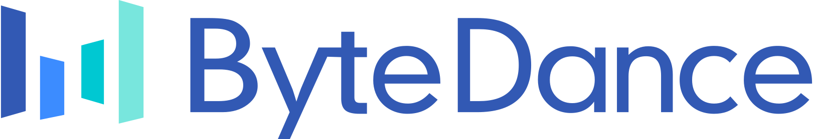

Apr 2025 - Present
Seed-Evaluation
Nov 2024 - Apr 2025
Seed-LLM-Evaluation
yangchenghao@mail.ustc.edu.cn
If you get tangled up, you just tango on.
I am a first-year Master's student at University of Science and Technology of China, advised by Prof. Nenghai Yu and Prof. Qi Chu. My academic journey is driven by a deep curiosity for artificial intelligence and its transformative potential.
My work particularly focuses on the intersection of AI security and LLMs evaluation, aiming to address critical challenges in deploying AI systems responsibly.
Keep an eye on this space for the latest news or announcements.
* equal contribution † corresponding authors
|
Hello Again! LLM-powered Personalized Agent for Long-term Dialogue
National University of Singapore & University of Science and Technology of China
9 citations
29 stars
Hao Li*, Chenghao Yang*, An Zhang†, Yang Deng, Xiang Wang, Tat-Seng Chua |
Open-domain dialogue systems have seen remarkable advancements with the development of large language models (LLMs). Nonetheless, most existing dialogue systems predominantly focus on brief single-session interactions, neglecting the real-world demands for long-term companionship and personalized interactions with chatbots. Crucial to addressing this real-world need are event summary and persona management, which enable reasoning for appropriate long-term dialogue responses. Recent progress in the human-like cognitive and reasoning capabilities of LLMs suggests that LLM-based agents could significantly enhance automated perception, decision-making, and problem-solving. In response to this potential, we introduce a model-agnostic framework, the Long-term Dialogue Agent (LD-Agent), which incorporates three independently tunable modules dedicated to event perception, persona extraction, and response generation. For the event memory module, long and short-term memory banks are employed to separately focus on historical and ongoing sessions, while a topic-based retrieval mechanism is introduced to enhance the accuracy of memory retrieval. Furthermore, the persona module conducts dynamic persona modeling for both users and agents. The integration of retrieved memories and extracted personas is subsequently fed into the generator to induce appropriate responses. The effectiveness, generality, and cross-domain capabilities of LD-Agent are empirically demonstrated across various illustrative benchmarks, models, and tasks. The code is released at this URL: https://github.com/leolee99/LD-Agent

|
CryptoX: Compositional Reasoning Evaluation of Large Language Models
Beihang University & M-A-P Lab & ByteDance Inc.
Jiajun Shi*, Chaoren Wei*, Liqun Yang*, Zekun Moore Wang, Chenghao Yang, Ge Zhang, Stephen Huang, Tao Peng, Jian Yang†, Zhoufutu Wen† |
The compositional reasoning ability has long been regarded as critical to the generalization and intelligence emergence of large language models (LLMs). However, despite numerous reasoning-related benchmarks, the compositional reasoning capacity of LLMs is rarely studied or quantified in the existing benchmarks. In this paper, we introduce CryptoX, an evaluation framework that, for the first time, combines existing benchmarks and cryptographic principles to quantify the compositional reasoning capacity of LLMs. Building upon CryptoX, we construct CryptoBench, which integrates these principles into several benchmarks for systematic evaluation. We conduct detailed experiments on widely used open-source and closed-source LLMs using CryptoBench, revealing a huge gap between open-source and closed-source LLMs. We further conduct thorough mechanistic interpretability experiments to reveal the inner mechanism of LLMs' compositional reasoning, involving subproblem decomposition, subproblem inference, and summarizing subproblem conclusions. Through analysis based on CryptoBench, we highlight the value of independently studying compositional reasoning and emphasize the need to enhance the compositional reasoning abilities of LLMs.
|  |
ByteDance Inc.
Nov 2024 - Present
Algorithm Intern, Research & Development | Seed-Evaluation
Department Change History
Apr 2025 - Present
Seed-Evaluation
Nov 2024 - Apr 2025
Seed-LLM-Evaluation
Beijing, China
|

|
National University of Singapore
Dec 2023 - Jun 2024
Research Intern (Remote), Agent | NExT++ Lab
|

|
University of Science and Technology of China Sep 2025 - Expected M.Eng. in Cyberspace Security (0838) Research Focus: Large Language Model Security Recommended for Graduate Admission |
|
|
University of Science and Technology of China Sep 2021 - Jun 2025 (Expected) B.Eng. in Information Security |